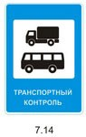

Водитель механического транспортного средства обязан:
Иметь при себе и по требованию сотрудников полиции передавать им для проверки:
водительское удостоверение или временное разрешение на право управления транспортным средством соответствующей категории;
регистрационные документы на данное транспортное средство (кроме мопедов), а при наличии прицепа - и на прицеп (кроме прицепов к мопедам);
в установленных случаях разрешение на осуществление деятельности по перевозке пассажиров и багажа легковым такси, путевой лист, лицензионную карточку и документы на перевозимый груз, а при перевозке крупногабаритных, тяжеловесных и опасных грузов - документы, предусмотренные правилами перевозки этих грузов;
документ, подтверждающий факт установления инвалидности, в случае управления транспортным средством, на котором установлен опознавательный знак "Инвалид";
страховой полис обязательного страхования гражданской ответственности владельца транспортного средства в случаях, когда обязанность по страхованию своей гражданской ответственности установлена федеральным законом.
В случаях, прямо предусмотренных действующим законодательством, иметь и передавать для проверки работникам Федеральной службы по надзору в сфере транспорта лицензионную карточку, путевой лист и товарно-транспортные документы.
При движении на транспортном средстве, оборудованном ремнями безопасности, быть пристегнутым и не перевозить пассажиров, не пристегнутых ремнями. При управлении мотоциклом быть в застегнутом мотошлеме и не перевозить пассажиров без застегнутого мотошлема.
Водитель механического транспортного средства, участвующий в международном дорожном движении, обязан:
иметь при себе и по требованию сотрудников полиции передавать им для проверки регистрационные документы на данное транспортное средство (при наличии прицепа - и на прицеп) и водительское удостоверение, соответствующие Конвенции о дорожном движении, а также документы, предусмотренные таможенным законодательством Таможенного союза, с отметками таможенных органов, подтверждающими временный ввоз данного транспортного средства (при наличии прицепа - и прицепа);
иметь на данном транспортном средстве (при наличии прицепа - и на прицепе) регистрационные и отличительные знаки государства, в котором оно зарегистрировано.
Водитель, осуществляющий международную автомобильную перевозку, обязан останавливаться по требованию работников Федеральной службы по надзору в сфере транспорта в специально обозначенных дорожным знаком 7.14 контрольных пунктах и предъявлять для проверки транспортное средство, а также разрешения и другие документы, предусмотренные международными договорами Российской Федерации. Отличительные знаки государства могут помещаться на регистрационных знаках.

Водитель транспортного средства обязан:
Перед выездом проверить и в пути обеспечить исправное техническое состояние транспортного средства в соответствии с Основными положениями по допуску транспортных средств к эксплуатации и обязанностями должностных лиц по обеспечению безопасности дорожного движения.
Запрещается движение при неисправности рабочей тормозной системы, рулевого управления, сцепного устройства (в составе автопоезда), не горящих (отсутствующих) фарах и задних габаритных огнях в темное время суток или в условиях недостаточной видимости, недействующем со стороны водителя стеклоочистителе во время дождя или снегопада.
При возникновении в пути прочих неисправностей, с которыми приложением к Основным положениям запрещена эксплуатация транспортных средств, водитель должен устранить их, а если это невозможно, то он может следовать к месту стоянки или ремонта с соблюдением необходимых мер предосторожности;
По требованию должностных лиц, которым предоставлено право государственного надзора и контроля за безопасностью дорожного движения и эксплуатации ТС проходить освидетельствование на состояние алкогольного опьянения и медицинское освидетельствование на состояние опьянения. Водитель транспортного средства Вооруженных Сил Российской Федерации, внутренних войск Министерства внутренних дел Российской Федерации, инженерно- технических и дорожно-строительных воинских формирований при федеральных органах исполнительной власти, спасательных воинских формирований Министерства Российской Федерации по делам гражданской обороны, чрезвычайным ситуациям и ликвидации последствий стихийных бедствий обязан проходить освидетельствование на состояние алкогольного опьянения и медицинское освидетельствование на состояние опьянения также по требованию должностных лиц военной автомобильной инспекции.
В установленных случаях проходить проверку знаний Правил и навыков вождения, а также медицинское освидетельствование для подтверждения способности к управлению транспортными средствами.
Предоставлять транспортное средство:
сотрудникам полиции, федеральных органов государственной охраны и органов федеральной службы безопасности в случаях, предусмотренных законодательством;
медицинским и фармацевтическим работникам для перевозки граждан в ближайшее лечебно- профилактическое учреждение в случаях, угрожающих их жизни.
По требованию владельцев транспортных средств федеральные органы государственной охраны и органы федеральной службы безопасности возмещают им в установленном порядке причиненные убытки, расходы либо ущерб в соответствии с законодательством.
Право остановки транспортных средств предоставлено регулировщикам, а грузовых автомобилей и автобусов, осуществляющих международные автомобильные перевозки, в специально обозначенных дорожным знаком 7.14 контрольных пунктах - также работникам Федеральной службы по надзору в сфере транспорта.
Работники Федеральной службы по надзору в сфере транспорта должны быть в форменной одежде и использовать для остановки диск с красным сигналом либо со световозвращателем. Они могут пользоваться для привлечения внимания водителей дополнительным сигналом-свистком.
Лица, обладающие правом остановки транспортного средства, обязаны предъявлять по требованию водителя служебное удостоверение.
При дорожно-транспортном происшествии водитель, причастный к нему, обязан:
немедленно остановить (не трогать с места) транспортное средство, включить аварийную сигнализацию и выставить знак аварийной остановки в соответствии с требованиями пункта 7.2 Правил, не перемещать предметы, имеющие отношение к происшествию;
принять меры для оказания первой помощи пострадавшим, вызвать "Скорую медицинскую помощь", а в экстренных случаях отправить пострадавших на попутном, а если это невозможно, доставить на своем транспортном средстве в ближайшее лечебное учреждение, сообщить свою фамилию, регистрационный знак транспортного средства (с предъявлением документа, удостоверяющего личность, или водительского удостоверения и регистрационного документа на транспортное средство) и возвратиться к месту происшествия;
освободить проезжую часть, если движение других транспортных средств невозможно. При необходимости освобождения проезжей части или доставки пострадавших на своем транспортном средстве в лечебное учреждение предварительно зафиксировать в присутствии свидетелей положение транспортного средства, следы и предметы, относящиеся к происшествию, и принять все возможные меры к их сохранению и организации объезда места происшествия;
сообщить о случившемся в полицию, записать фамилии и адреса очевидцев и ожидать прибытия сотрудников полиции.
Если в результате дорожно-транспортного происшествия нет пострадавших, водители при взаимном согласии в оценке обстоятельств случившегося могут, предварительно составив схему происшествия и подписав ее, прибыть на ближайший пост дорожно-патрульной службы (ДПС) или в орган полиции для оформления происшествия.
Если в результате дорожно-транспортного происшествия с участием двух транспортных средств, гражданская ответственность владельцев которых застрахована в соответствии с законодательством об обязательном страховании гражданской ответственности владельцев транспортных средств, вред причинен только имуществу и обстоятельства причинения вреда в связи с повреждением имущества в результате дорожно-транспортного происшествия, характер и перечень видимых повреждений транспортных средств не вызывают разногласий участников дорожно-транспортного происшествия, оформление документов о дорожно-транспортном происшествии может быть осуществлено без участия уполномоченных на то сотрудников полиции путем заполнения водителями причастных к дорожно-транспортному происшествию транспортных средств соответствующих бланков извещений о дорожно-транспортном происшествии в соответствии с требованиями, установленными Правилами обязательного страхования гражданской ответственности владельцев транспортных средств.
2.7. Водителю запрещается:
управлять транспортным средством в состоянии опьянения (алкогольного, наркотического или иного), под воздействием лекарственных препаратов, ухудшающих реакцию и внимание, в болезненном или утомленном состоянии, ставящем под угрозу безопасность движения;
передавать управление транспортным средством лицам, находящимся в состоянии опьянения, под воздействием лекарственных препаратов, в болезненном или утомленном состоянии, а также лицам, не имеющим при себе водительского удостоверения на право управления транспортным средством данной категории или в случае его изъятия в установленном порядке - временного разрешения, кроме случаев обучения вождению в соответствии с разделом 21 Правил;
пересекать организованные (в том числе и пешие) колонны и занимать место в них;
управлять транспортным средством с нарушением режима труда и отдыха, установленного уполномоченным федеральным органом исполнительной власти, а при осуществлении международных автомобильных перевозок — международными договорами Российской Федерации;
пользоваться во время движения телефоном, не оборудованным техническим устройством, позволяющим вести переговоры без использования рук.